Início / Créditos
Créditos das imagens
Todas as imagens foram obtidas no Unsplash e são distribuídas sob a Licença Unsplash, que permite uso comercial e não comercial sem pedido de autorização. A licença não exige atribuição, mas os autores são creditados aqui e junto a cada imagem.
Cada empreendimento usa uma única série: as perspectivas 3D do Aurora são do mesmo projeto; as fotos do Jardins do Vale mostram uma mesma casa real; os interiores do Atelier 85 mostram um mesmo galpão de concreto. Nenhuma imagem retrata obras da VÉRTICE, que é uma empresa fictícia.
Fontes tipográficas: Instrument Serif e Schibsted Grotesk, ambas sob a SIL Open Font License, hospedadas junto com o site.
| Miniatura | Imagem | Autor | Página original |
|---|---|---|---|
| Aurora (perspectivas 3D) | |||
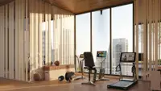 | Academia com vista para a cidade | Aalo Lens | Ver no Unsplash |
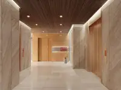 | Hall dos elevadores com painéis de madeira | Aalo Lens | Ver no Unsplash |
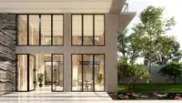 | Térreo envidraçado com jardim na entrada do edifício | Aalo Lens | Ver no Unsplash |
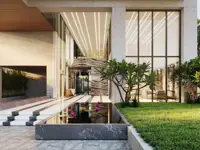 | Hall de entrada com espelho d’água e vegetação | Aalo Lens | Ver no Unsplash |
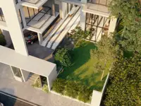 | Vista aérea do terraço-jardim | Aalo Lens | Ver no Unsplash |
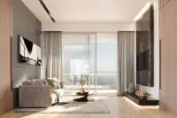 | Sala de estar com janela de piso a teto | Aalo Lens | Ver no Unsplash |
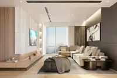 | Sala com sofá seccional e painel de madeira | Aalo Lens | Ver no Unsplash |
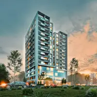 | Torre residencial ao entardecer, cercada de árvores | Aalo Lens | Ver no Unsplash |
| Jardins do Vale (casa de referência) | |||
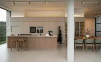 | Cozinha integrada ao jantar, em madeira clara | Caroline Badran | Ver no Unsplash |
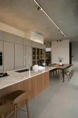 | Ilha em pedra sob o teto de concreto aparente | Caroline Badran | Ver no Unsplash |
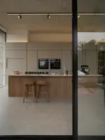 | Ilha da cozinha vista através da porta de vidro | Caroline Badran | Ver no Unsplash |
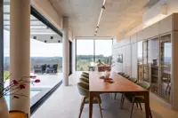 | Sala de jantar aberta para o vale por grandes janelas | Caroline Badran | Ver no Unsplash |
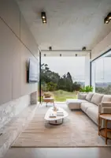 | Sala de estar com teto de concreto e vista para as colinas | Caroline Badran | Ver no Unsplash |
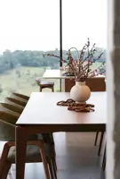 | Mesa de madeira com vaso de flores diante da paisagem | Caroline Badran | Ver no Unsplash |
| Atelier 85 | |||
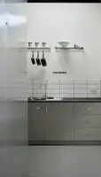 | Copa com armários cinza e azulejos brancos | Neon Wang | Ver no Unsplash |
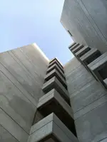 | Edifício de concreto aparente visto de baixo, com varandas em balanço | Jinish Shah | Ver no Unsplash |
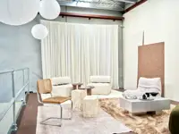 | Estar sob pé-direito alto, com mezanino e paredes de concreto | Neon Wang | Ver no Unsplash |
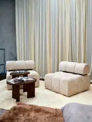 | Poltronas bege diante de parede de concreto e cortina | Neon Wang | Ver no Unsplash |
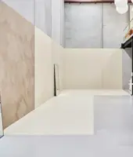 | Vão livre de concreto com mezanino metálico | Neon Wang | Ver no Unsplash |
| Institucional, capítulos e galeria | |||
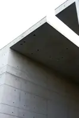 | Laje de concreto aparente recortando o céu | Lysander Yuen | Ver no Unsplash |
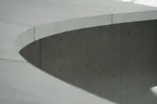 | Laje curva de concreto vista de baixo | Clarisse Croset | Ver no Unsplash |
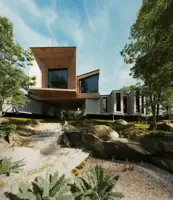 | Casa de concreto e madeira entre rochas e árvores | juan verdaguer aguerrebehere | Ver no Unsplash |
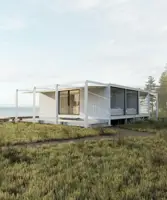 | Casa branca sobre campo aberto perto do mar | Maverick Frame | Ver no Unsplash |
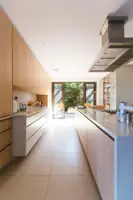 | Cozinha linear em madeira clara | Jason Briscoe | Ver no Unsplash |
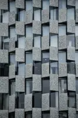 | Fachada com módulos de pedra em padrão alternado | Carlos Torres | Ver no Unsplash |
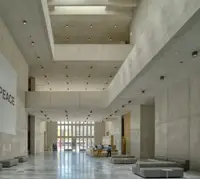 | Hall de pé-direito alto em concreto claro | Ricardo Gomez Angel | Ver no Unsplash |
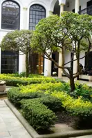 | Jardim de pátio com árvores e cercas vivas | Tommaso Ubezio | Ver no Unsplash |
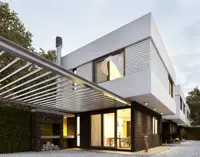 | Casa branca com pergolado e jardim lateral | juan verdaguer aguerrebehere | Ver no Unsplash |
| Piscina de borda infinita ao nascer do sol | Roberto Nickson | Ver no Unsplash | |
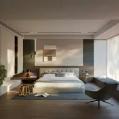 | Suíte ampla com poltrona e luz indireta | Puscas Adryan | Ver no Unsplash |
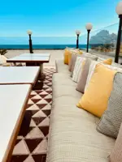 | Terraço com sofá de alvenaria e almofadas | SYKS | Ver no Unsplash |
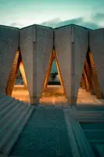 | Estrutura de tijolos com aberturas triangulares iluminadas | Javier Garcia Chavez | Ver no Unsplash |
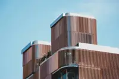 | Edifício com fachada de ripas curvas em tom terroso | Amir Hosseini | Ver no Unsplash |
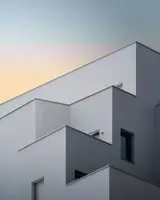 | Volumes brancos escalonados contra o céu do entardecer | Pierre Châtel-Innocenti | Ver no Unsplash |
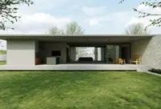 | Casa térrea de linhas retas com muro de pedra e gramado | João Emanuel | Ver no Unsplash |
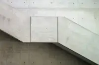 | Escada de concreto aparente presa a uma parede | Dorsa Masghati | Ver no Unsplash |
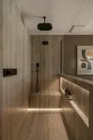 | Banheiro em pedra com luz embutida | Peter Muniz | Ver no Unsplash |
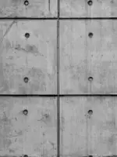 | Painéis de concreto com marcas de fôrma | the blowup | Ver no Unsplash |
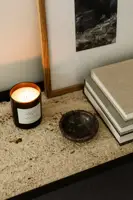 | Bancada de pedra texturizada com vela acesa | Karolina Grabowska | Ver no Unsplash |
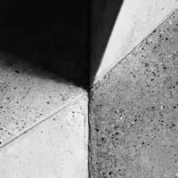 | Quina de concreto polido em preto e branco | Rowan Heuvel | Ver no Unsplash |
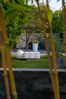 | Jardim com bambus e peças escultóricas brancas | Sergej ***** | Ver no Unsplash |
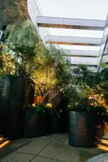 | Jardim urbano iluminado entre edifícios | Tsuyoshi Kozu | Ver no Unsplash |
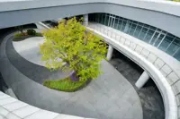 | Pátio circular com árvore e caminhos curvos | Declan Sun | Ver no Unsplash |